An end-to-end re-analysis of human plasma cell differentiation from BD Rhapsody
single-cell RNA-seq, integrating sample tag demultiplexing, stage-aware quality
control, a methodological comparison of cell cycle regression strategies, and
biological characterization of plasma cell sub-populations across protein-coding
and lncRNA regulatory layers. Built on the publicly available dataset from
Alaterre et al. (Blood, 2024).
Platform
BD Rhapsody WTA + sample tag multiplexing
Dataset
GSE242330. 8,545 cells across 4 differentiation stages, 2 biological replicates
Plasma cells are the body's antibody factories: terminally differentiated B cells
that survive for decades in bone marrow niches and continuously secrete
immunoglobulin. The path from memory B cell (MBC) to mature plasma cell (PC)
passes through two proliferative intermediates: preplasmablasts (prePB) and
plasmablasts (PB).
Alaterre et al. generated a four-stage in vitro differentiation system
and profiled it with BD Rhapsody single-cell RNA-seq. This case study re-analyzes
their public data with an emphasis on the methodological choices that shape what
we see, particularly around cell cycle confounding, which is unusually strong in
this dataset because prePB and PB are heavily proliferating populations.
82% of preplasmablasts and 53% of plasmablasts are in S or G2/M phase.
How you handle cell cycle determines what biology you can see.
The data
Experimental design
Two biological replicates were sequenced with BD Rhapsody using the Single-Cell
Multiplex Kit. Four sample tags per replicate (eight in total) labeled cells from
each differentiation stage. After QC, 7,920 cells were retained for downstream
analysis (92.7% retention).
Figure 1. Cells recovered per differentiation stage after
sample tag demultiplexing and QC. The four stages of in vitro plasma cell
differentiation are represented in both biological replicates, with prePB
(the most proliferative stage) most abundantly captured.
Sample tag demultiplexing. BD Rhapsody multiplexes multiple
samples into one library using oligo barcodes. The per-cell mapping
(Cell_Index to Sample_Tag to Sample_Name) was joined onto the gene count matrix
to assign each cell to its differentiation stage. Multiplets and Undetermined
cells (~2-3%) were filtered out.
The approach
Methodological choices that matter
Stage-aware quality control
Plasma cells have radically different transcriptional profiles than memory B
cells: median UMI counts vary by 10× across stages, mitochondrial content varies
by 4×, and naturally high %mt in plasmablasts (reflecting their metabolic demand)
would be misclassified as poor quality under standard thresholds. Stage-aware
percentile thresholds (95th percentile within each stage for %mt, 1st/99th
for nFeature and nCount) preserve biological variation while removing technical
outliers.
LogNormalize over SCTransform
With UMI counts ranging from ~4,000 in MBC to ~50,000 in prePB, the shared
mean-variance assumption underlying SCTransform's GLM doesn't hold across this
dynamic range. LogNormalize treats each cell independently and is more honest
about the heterogeneity.
Immunoglobulin genes excluded from variable features
Ig constant and variable region genes are so dominantly expressed in PB and PC
that they drive clustering by antibody class rather than by regulatory state.
They're retained in the data, just not used to find the variable features that
define cell identity.
Cell cycle regression, a methodological comparison
With over 80% of preplasmablasts in S or G2/M phase, cell cycle is not a
nuisance variable: it's part of the biology. To make this choice explicit,
three regression strategies were compared on the same data:
A. Full regression.
Regresses S.Score and G2M.Score independently. Removes cell cycle entirely.
Matches the original publication.
B. CC.Difference regression.
Regresses S.Score minus G2M.Score. Removes within-cycle phase identity while
preserving the cycling-versus-quiescent axis.
C. No regression.
Retains all cell cycle signal as biology.
Figure 2. Three regression strategies, same upstream data.
Top row: colored by experimental stage. Bottom row: colored by cell cycle phase.
Approach B (CC.Difference) was selected for the headline trajectory because it
produces the cleanest differentiation gradient while removing phase-driven
sub-clustering. The comparison itself demonstrates how methodological choices
shape the embedding.
The results
What the data tells us
Six unbiased clusters recapitulate the four-stage trajectory
Figure 3. Integrated UMAP after Harmony batch correction
(left: by experimental stage; right: annotated clusters at resolution 0.5).
Six unbiased Louvain clusters map cleanly onto the four labeled differentiation
stages, with each stage assigned to a dominant cluster (≥78% purity). MBC,
prePB, and PB each form one principal cluster; PCs split into two
sub-populations.
Cluster identity from canonical markers
Figure 4. Top 5 differentially expressed genes per cluster,
scaled average expression. Each cluster shows a distinct marker signature:
MBC clusters express resting B-cell markers (FOXP1, CD83, CD69, KLF6); prePB
and PB express activation/proliferation markers (CDCA7, MYB, TPRG1, ZBED2);
and the two PC clusters separate cleanly by immunoglobulin class (top vs
bottom of the PC blocks).
The PC sub-populations reveal classical isotype biology
Unbiased clustering recovered two PC-dominated sub-populations that the original
publication did not separately characterize. Direct comparison between them
reveals a textbook immunoglobulin class switch:
Figure 5. Differential expression between the two PC-dominated
clusters. C2 expresses the full IgG constant region panel (IGHG1, IGHG2, IGHG3,
IGHG4, all at extreme log2FC) and represents class-switched IgG-secreting
plasma cells. C4 expresses IGHA1, IGHA2, IGHM, and IGJ (the joining chain
required for polymeric IgA/IgM assembly) and represents IgA/IgM-secreting
plasma cells.
Two PC clusters, one biological story: the classical immunoglobulin class switch
that separates IgG-secreting plasma cells from IgA/IgM-secreting plasma cells,
recovered here without prior knowledge or supervised input.
Findings summary
1. The trajectory is recovered cleanly
The MBC to prePB to PB to PC differentiation axis emerges as the dominant
structure in the integrated UMAP, with cluster purity ≥78% against the
experimental labels.
2. Sample tag demultiplexing was validated by biology
Immunoglobulin content rises monotonically across the assigned stages
(MBC 0% to PC 1.3% median %Ig), confirming the demultiplexing was correct at
the cell level.
3. PC heterogeneity follows the immunoglobulin class switch
The two PC sub-clusters separate by isotype (IgG vs IgA/IgM), a classical
immunological feature recovered de novo from unsupervised clustering.
4. Methods matter, transparently
Three cell cycle regression strategies produce three meaningfully different
views of the same data. The case study documents each choice and shows the
consequences.
5. The class-switching state is identifiable
Sub-clustering within proliferating cells revealed an AICDA-expressing
germinal-center-like population, providing a mechanistic link between the
proliferating compartment and the downstream IgG vs IgA/IgM plasma cell
split.
6. A lncRNA regulatory layer maps onto the same biology
Stage-specific lncRNAs (MIR155HG, NEAT1, WT1-AS, MIR4435-1HG and others)
reinforce and extend the protein-coding findings, with MIR155HG marking the
prePB sub-cluster most aligned with the class-switching program.
Going deeper
Sub-clustering reveals the class-switching decision point
The headline analysis identified two PC sub-populations separated by
immunoglobulin class (IgG vs IgA/IgM). But where, in the differentiation
trajectory, does that decision happen? To find out, the proliferating cells
(prePB + PB) were re-analyzed as a focused subset, without cell cycle
regression, at clustering resolution 0.2 (matching the paper's Analysis 2
strategy). This isolated subset uses cell cycle as biological signal rather
than nuisance variation.
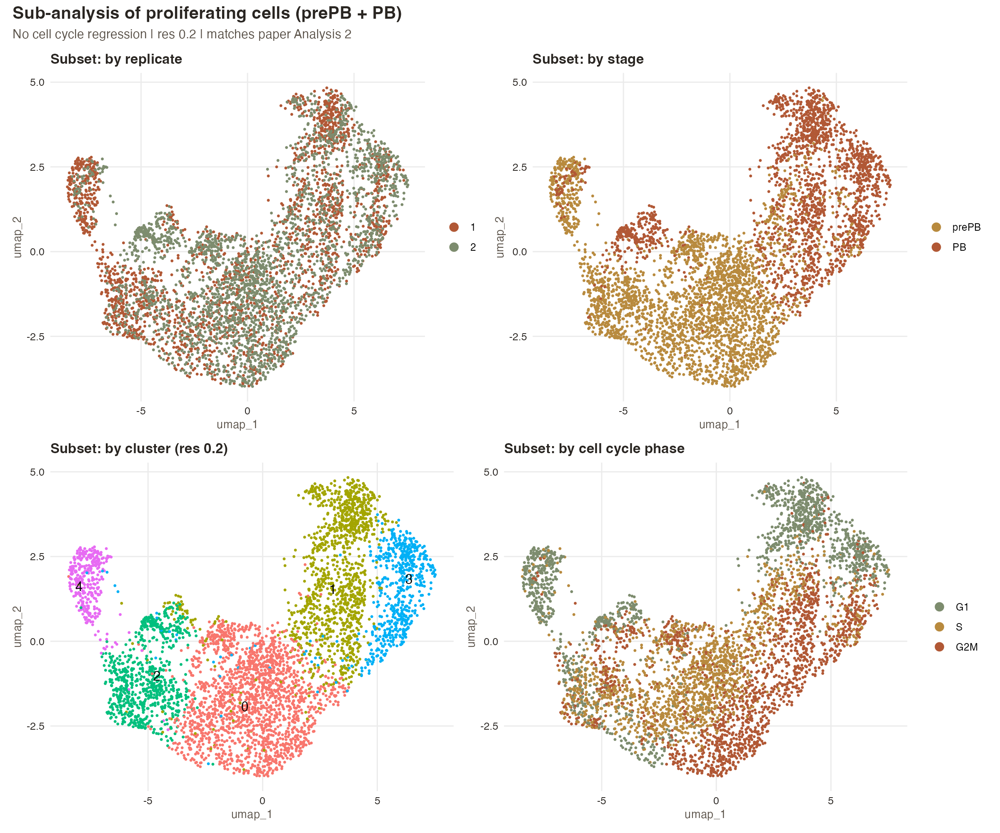
Figure 6. Sub-analysis UMAP of the proliferating compartment
(prePB + PB, n = 4,850 cells). Five sub-clusters were recovered at resolution
0.2. The cell cycle panel (bottom-right) shows that phase varies along the
UMAP structure rather than driving the clustering itself, consistent with
biology being the dominant axis of variation.
Five sub-clusters, five biological states
Per-cluster marker analysis revealed that each sub-cluster corresponds to a
discrete state along the B-cell-to-plasma-cell trajectory.
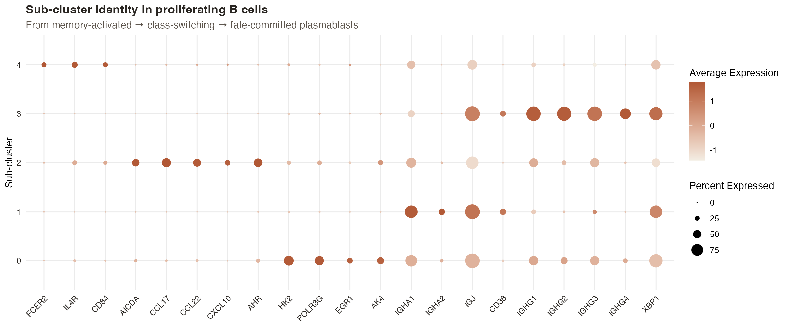
Figure 7. Sub-cluster identity revealed by marker expression.
Each cluster lights up a distinct molecular program: memory activation
(cluster 4), germinal-center-like class-switching machinery (cluster 2),
metabolic activation (cluster 0), and parallel commitment to IgA (cluster 1)
or IgG (cluster 3) fates.
Reading the dot plot left to right:
Cluster 4 (memory-activated).
FCER2 (CD23), IL4R, CD84. Classical signatures of an IL-4-responsive,
memory-like B-cell state. The entry point into the differentiation program.
Cluster 2 (germinal-center-like).
AICDA, CCL17, CCL22, CXCL10, AHR. AICDA (activation-induced cytidine deaminase)
is the enzyme responsible for class switch recombination and somatic
hypermutation. This is the cellular state in which the antibody-class
decision is actually being made.
Cluster 0 (metabolic activation).
HK2, POLR3G, EGR1, AK4. Glycolytic switch, RNA Pol III activity, and
proliferation-associated transcription. The largest cluster (1,778 cells),
representing the proliferative engine of the program.
Cluster 1 (IgA-committing PB).
IGHA1, IGHA2, IGJ, CD38. Plasmablasts that have committed to the
IgA-secreting fate, expressing the J-chain required for polymeric IgA
assembly. The precursor to the IgA/IgM PC cluster from the headline analysis.
Cluster 3 (IgG-committing PB).
IGHG1, IGHG2, IGHG3, IGHG4, XBP1. Plasmablasts on the IgG trajectory, with
XBP1 marking activation of the unfolded protein response in preparation for
high-volume antibody secretion. The precursor to the IgG PC cluster from the
headline analysis.
AICDA expression localizes to a discrete sub-cluster, identifying the cellular
state where class-switch recombination occurs and providing a mechanistic link
between the proliferating compartment and the IgG vs IgA/IgM split observed
downstream in mature plasma cells.
This finding adds substance to the headline result. The two PC clusters
separated by isotype (C2 IgG, C4 IgA/IgM) are not arbitrary endpoints: they
trace back to a discrete decision-making sub-population within the
proliferating compartment, marked by AICDA expression. The original publication
did not separately characterize this sub-cluster structure.
Adding a layer
The lncRNA regulatory program
Long non-coding RNAs (lncRNAs) are emerging as key regulators of immune cell
identity, often acting at the boundary between epigenetics and transcription.
In B-cell biology specifically, several lncRNAs have well-characterized roles
in activation, class switching, and plasma cell differentiation, yet they are
rarely treated as a primary analytical layer in standard scRNA-seq workflows.
This case study extends the protein-coding analysis with a focused lncRNA
layer to ask: do non-coding regulators trace the same trajectory, and do
they add resolution to the protein-coding story?
Annotation: GENCODE v19, focused biotypes
The Alaterre et al. data was aligned to the hg19 reference. To match this
alignment cleanly, lncRNAs were annotated using GENCODE v19 (the
final hg19 release), focused on the two best-characterized lncRNA biotypes:
lincRNA (long intergenic non-coding RNA) and antisense
(transcribed antisense to a protein-coding gene). These two categories have
the cleanest functional annotation and the most published regulatory roles
in immune cell biology; broader biotype panels include many uncharacterized
transcripts that would add noise.
Of 12,390 annotated lncRNAs in this focused panel,
3,208 (25.9%) were detected in the scRNA-seq data. Detection
was modestly higher for antisense (32.1%) than for lincRNA (21.4%), consistent
with antisense lncRNAs often co-expressing with their host protein-coding
partners. This is a healthy detection rate for single-cell lncRNA analysis,
where most transcripts are intrinsically lowly expressed.
Stage-specific lncRNA signatures
Differential expression of detected lncRNAs against each differentiation stage
revealed coherent stage-specific signatures. The top ten enriched lncRNAs per
stage, displayed as a scaled-expression heatmap, fall into four interpretable
modules:
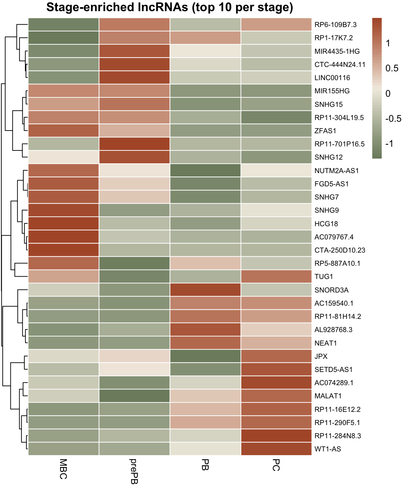
Figure 8. Top 10 stage-enriched lncRNAs per stage, scaled
average expression. Each row block represents a coherent lncRNA module:
memory-state (FGD5-AS1, SNHG9, HCG18, CTA-250D10.23), proliferative
activation (MIR155HG, ZFAS1, SNHG12, MIR4435-1HG, RP11-701P16.5),
plasmablast UPR (NEAT1, SNORD3A, AL928768.3), and mature plasma cell
(MALAT1, WT1-AS, RP11-16E12.2, JPX).
Stage-by-stage volcano analysis
A per-stage volcano panel makes each stage's enriched lncRNAs visible
individually, including the magnitude of fold change and statistical
significance:
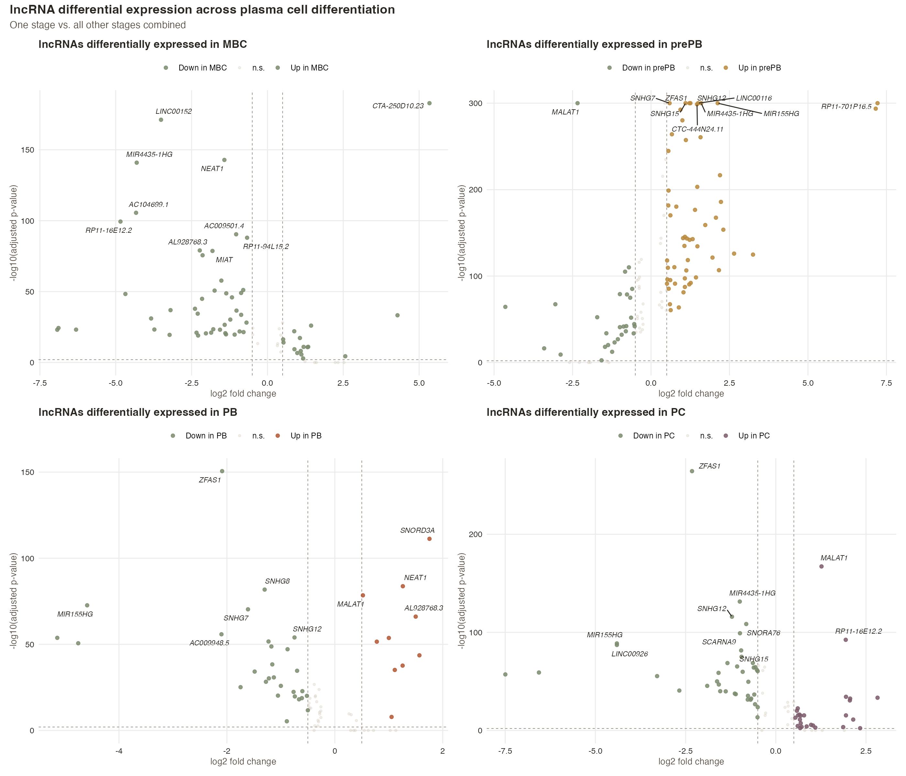
Figure 9. Volcano plots of lncRNA differential expression
for each stage versus all other stages combined. MBC is marked most
distinctively by CTA-250D10.23 (log2FC > 5); prePB activates a broad
proliferative lncRNA program led by MIR155HG, ZFAS1, and RP11-701P16.5;
PB is dominated by NEAT1, SNORD3A, and MALAT1; PC enrichment includes
WT1-AS and RP11-16E12.2.
Three lncRNAs that anchor the biological story
Three lncRNAs from the analysis deserve particular attention because each
connects to a specific biological finding from the protein-coding analysis:
MIR155HG: the activation-and-class-switching link
MIR155HG is the host gene of miR-155, one of the most extensively studied
microRNAs in B-cell biology, with documented roles in germinal center
formation, class switching, and plasma cell differentiation. In this dataset,
MIR155HG localizes specifically to cluster 5 (a small prePB sub-cluster of
~614 cells) with avg_log2FC ≈ 3.0 and ~50% of cells expressing. The
enrichment is highly cluster-specific: MIR155HG is expressed in only ~13% of
cells from other clusters. This places the well-characterized miR-155
regulatory program at a discrete point in the trajectory, consistent with
its role in driving the activation and class-switch decision.
NEAT1: the plasmablast UPR signature
NEAT1 is a paraspeckle scaffolding lncRNA known to be induced by ER stress
and unfolded protein response (UPR) activation. Here, NEAT1 is enriched in
PB (avg_log2FC ≈ 1.26, ~76% of cells expressing) compared to other stages.
This matches the textbook biology of plasmablasts: as cells gear up for
high-volume antibody secretion, the UPR is activated, paraspeckles expand,
and NEAT1 is upregulated to scaffold them. The lncRNA layer therefore
provides molecular confirmation of the secretory program identified through
protein-coding markers (XBP1, ATF6, HSPA5).
WT1-AS: a lncRNA layer to the isotype switch
WT1-AS, the antisense transcript of the WT1 transcription factor, is
enriched in PC clusters and shows preferential expression in cluster 2 (the
IgG-secreting plasma cells identified in the headline analysis). The fold
change is substantial (log2FC ≈ 2.5 against other PC populations) and the
pattern is cluster-specific rather than stage-specific. This adds a
non-coding regulatory dimension to the IgG vs IgA/IgM split: the same
sub-populations that differ by antibody class also differ by lncRNA
expression, suggesting that the isotype-switch decision is reflected at
multiple regulatory layers.
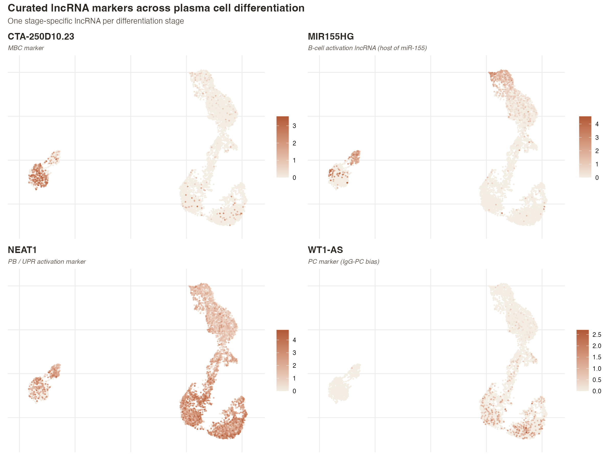
Figure 10. Curated lncRNA expression on the headline UMAP.
CTA-250D10.23 marks the MBC island; MIR155HG concentrates in a discrete
prePB sub-population; NEAT1 is enriched in PB; WT1-AS is highest in the
IgG-PC cluster. Each lncRNA marks a different stage of the differentiation
trajectory at single-cell resolution.
The lncRNA layer is not redundant with the protein-coding analysis. It
reinforces stage identity (NEAT1 in PB, MIR155HG in activated prePB) and
extends the cluster-level findings (WT1-AS adds a non-coding signature to
the IgG-PC sub-population). Both layers tell the same biological story in
different molecular vocabularies.
Methodologically, this section demonstrates that focused lncRNA panels
(curated biotypes, aligned annotation) can be incorporated into standard
scRNA-seq workflows without specialized infrastructure, and that they yield
biologically interpretable results that complement protein-coding analyses.
Next steps in this analysis (planned for the next phase of work) include
hdWGCNA co-expression modules, TF-target inference with SCENIC, and a
formal regulatory network integrating lncRNAs and their candidate
protein-coding partners.
Integrating the layers
Co-expression networks reveal regulatory modules
Individual gene-by-gene analysis tells us which genes change between stages,
but biology is rarely governed by isolated genes. Regulatory programs operate
as modules of co-expressed genes acting together. To make this
structure explicit, the protein-coding and lncRNA layers were integrated using
hdWGCNA (high-dimensional weighted gene co-expression network
analysis), which builds metacells from the integrated data and identifies
modules of genes whose expression covaries across the trajectory.
Network construction
The gene panel for the network combined the 3,000 variable features with the
3,208 detected lncRNAs (after excluding immunoglobulin and TR receptor genes),
yielding 5,521 genes for network construction. Cells were aggregated into
stage-homogeneous metacells (k=25 neighbors, max_shared=10) using the Harmony
embedding, reducing 7,920 cells into a more reliable expression matrix for
network analysis.
Soft-thresholding power (β) was selected by scanning powers from 1 to 30 and
identifying the smallest value at which the network reaches scale-free
topology (R² > 0.8). The diagnostic identified β = 4 as the
optimal value, with healthy mean connectivity (~400) at that power.
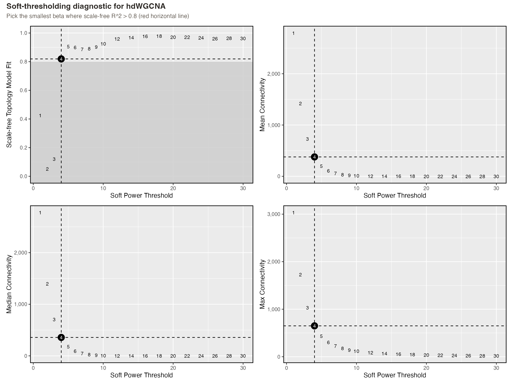
Figure 11. Soft-thresholding diagnostic across powers 1-30.
Top-left: scale-free topology R² crosses 0.8 at β = 4 (selected). Top-right:
mean connectivity at β = 4 is approximately 400, in the healthy range for
biologically interpretable modules. The strong biological signal in this
dataset allows a relatively low β to reach scale-free topology.
Four modules emerge from the network
Network construction with β = 4 identified four major co-expression
modules (plus a "grey" unassigned category for genes without strong
co-expression patterns). Each module shows a distinct biological signature
based on its top hub genes.
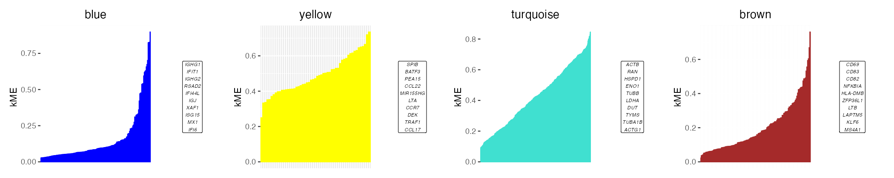
Figure 12. kME distribution per module with the top 10 hub
genes labeled. The kME value measures how strongly each gene correlates with
its module's eigengene. Steep curves indicate tight modules with clearly
defined hubs; the labeled hub genes are the biological drivers of each
module.
The four modules and their biological identity:
Brown module (143 genes, 28% lncRNAs)
— Memory B-cell program. Top hubs: MS4A1 (CD20), KLF6, LAPTM5,
LTB, ZFP36L1, CD69, CD83, NFKBIA, HLA-DMB. Maps onto the MBC clusters of
the trajectory.
Yellow module (53 genes, 3 lncRNAs)
— Activation and class-switching program. Top hubs: SPIB, BATF3,
PEA15, CCL22, MIR155HG, LTA, CCR7, DEK, TRAF1, CCL17.
This module formally links MIR155HG (identified as a stage-specific lncRNA
in the differential expression analysis) to BATF3 (the AP-1 family
transcription factor essential for class switching) within a single
regulatory module.
Turquoise module (484 genes, 12% lncRNAs)
— Proliferation and metabolic activation. Top hubs: ACTG1, TUBA1B,
TYMS, DUT, LDHA, ENO1, TUBB, RAN, HSPD1. Combines DNA-synthesis machinery,
glycolytic metabolism, and cytoskeleton genes characteristic of the
proliferating prePB/PB compartment.
Blue module (172 genes, 61% lncRNAs)
— IgG plasma cells with type-I interferon response. Top hubs:
IFI6, MX1, ISG15, XAF1, IGJ, IFIT1, IFIT3, IFI44L, plus IGHG1 and IGHG2 as
connected members. This module integrates the IgG isotype with a
classical type I IFN signature, mapping cleanly onto the C2 IgG-PC cluster
from the headline analysis.
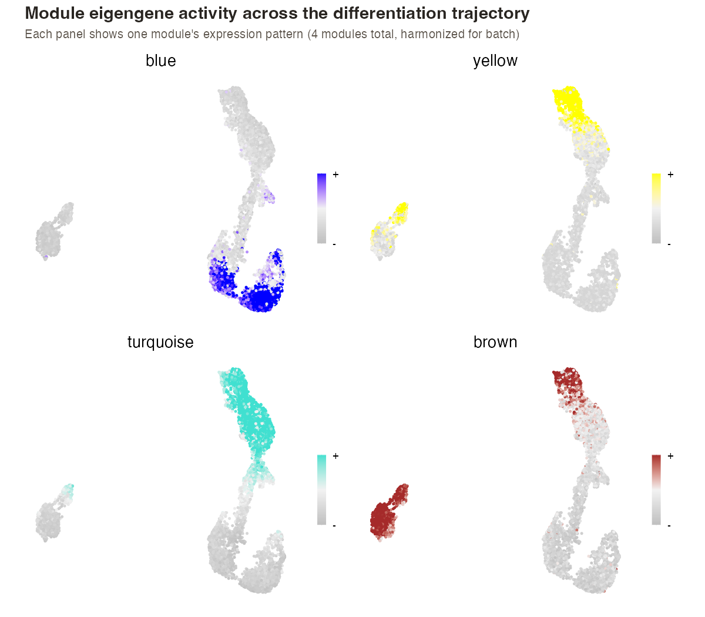
Figure 13. Each module's eigengene activity projected onto
the headline UMAP. Brown peaks in MBC, yellow in the prePB activation state,
turquoise across the proliferating compartment, and blue in the IgG-PC
cluster. The spatial pattern of each module recapitulates the
differentiation trajectory.
The unified hub-gene network
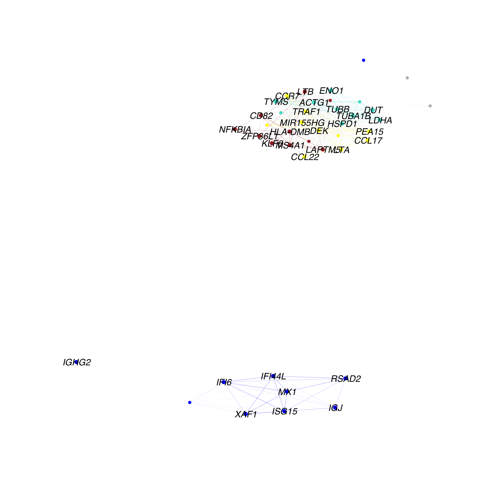
Figure 14. Force-directed network of the top hub genes
from all four modules. Three modules (brown memory, yellow activation,
turquoise proliferation) cluster together as the "active phase" of B-cell
differentiation, while the blue module (terminal IgG-PC + IFN response) sits
as a biologically distant cluster. The spatial separation reflects the
regulatory distance between actively differentiating cells and terminally
differentiated plasma cells.
MIR155HG appears as a hub gene in the yellow class-switching module alongside
BATF3, SPIB, and CCL17. This formally validates the lncRNA layer finding that
MIR155HG marks the class-switching decision point, embedding it within a
regulatory module that includes the transcription factors driving class
switch recombination.
What the network analysis adds
The co-expression network analysis adds three things that the gene-by-gene
analyses could not:
Module-level regulatory units.
Instead of treating AICDA, BATF3, and MIR155HG as independent observations,
we now have a defined yellow module that captures the class-switching program
as a coherent regulatory unit with named hubs.
Formal lncRNA-protein integration.
MIR155HG sits in the same module as BATF3 and SPIB; PC-marker lncRNAs sit in
the same module as the IGHG genes and ISGs. These co-membership relationships
are testable hypotheses about co-regulation.
A summary view across all genes.
The four modules summarize the biology of 5,521 genes into four interpretable
regulatory programs (plus 4,669 genes that did not show strong co-expression,
mostly lowly-expressed lncRNAs that lack the power for network inference at
single-cell resolution).
Next steps planned for this analysis include TF-target inference with SCENIC
to formally distinguish regulators from regulated genes within each module,
and integration of the scATAC-seq data (also available from the same study)
to add a chromatin-accessibility layer to the regulatory networks.
The chromatin layer
What opens before it is expressed
RNA tells us which genes are active. Chromatin tells us which genes are
poised to be active, and which regulatory switches the cell has
thrown to get there. The same study that generated the RNA data also profiled
matched single-cell ATAC-seq (assay for transposase-accessible chromatin),
measuring which regions of the genome are open and accessible at each
differentiation stage. This phase integrates that chromatin layer with the
RNA findings, asking a sharper question: which transcription factors
drive each step of the journey from memory B cell to plasma cell?
Assay
single-cell ATAC-seq (10x scATAC)
Dataset
GSE242324. 10,267 cells across 4 stages, 309,343 unified peaks
Reference
hg19, JASPAR2020 vertebrate motifs
Tooling
Signac, motifmatchr, RSpectra, visNetwork
A note on the source data
Honesty about data quality is part of the work. The fragments files deposited
with GSE242324 contain a coordinate corruption: start positions were written
in scientific notation (for example, 1.44e+08 in place of the exact
integer), losing the precision needed for fragment-level quality metrics. The
analysis was therefore built on the precomputed peak-by-cell count matrices,
which preserve correct coordinates. Two consequences follow: TSS enrichment and
nucleosome-signal quality metrics were not computed, and coverage track plots
were not generated. Cell-level quality control instead used peak count
thresholds. The core analyses (clustering, differential accessibility, motif
enrichment) depend only on the count matrices and are unaffected. Adapting to
imperfect public data is a routine part of computational biology, and
documenting the choice is more useful than hiding it.
Chromatin alone recovers the developmental stages
Before asking about regulation, a sanity check: does the chromatin landscape
carry enough information to distinguish the four stages on its own? After
TF-IDF normalization and dimensionality reduction by latent semantic indexing,
the cells were embedded and clustered using only their accessibility profiles,
with no input from the RNA labels.
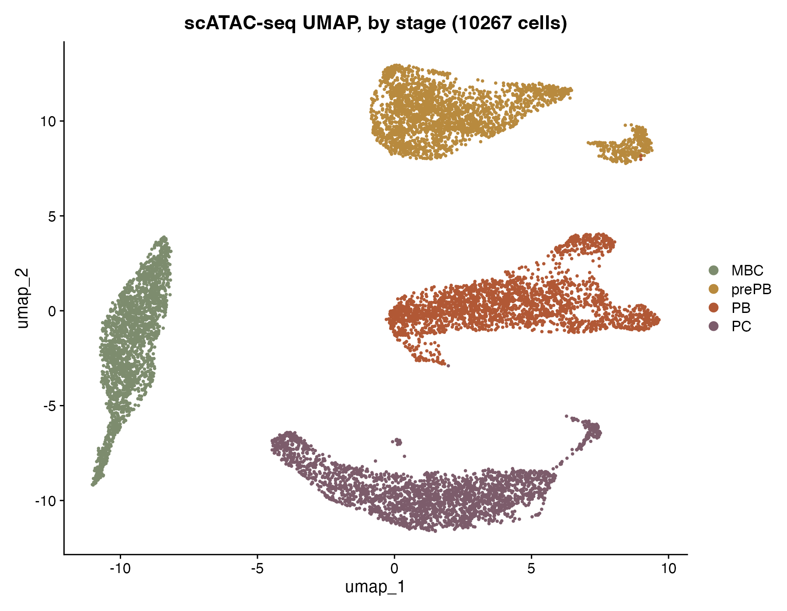
Figure 15. scATAC-seq UMAP of 10,267 cells across 309,343
unified peaks, colored by experimental stage. The four differentiation stages
separate cleanly in chromatin space, with prePB forming the most distinctive
territory (the stage with the most open chromatin, more than twice the median
peaks per cell of any other stage). Chromatin accessibility alone recovers the
same biology identified in the RNA analysis.
A single dramatic remodeling step
With the stages confirmed, the natural question is what changes between them.
Rather than comparing each stage against all others, the differential
accessibility analysis followed the trajectory itself: three sequential
transitions, each comparing adjacent stages. For every transition, peaks were
classified as opening (gaining accessibility moving forward) or
closing (losing it).
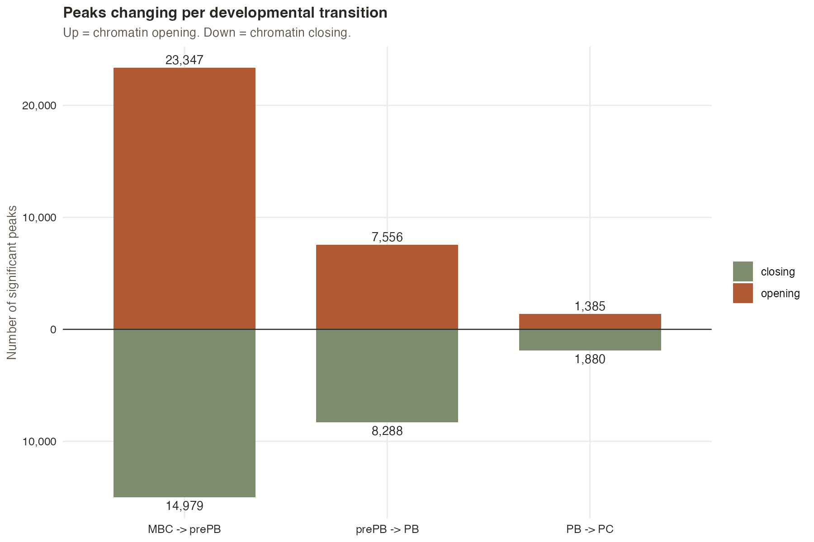
Figure 16. Significant peaks opening (up) and closing (down)
at each developmental transition. The first transition (MBC to prePB) involves
23,347 opening and 14,979 closing peaks, three to seventeen times more
chromatin remodeling than the later transitions. The chromatin landscape is
essentially rewritten at the entry into the differentiation program, then
refined rather than rebuilt at each subsequent step.
The magnitude reinforces the pattern. Opening peaks at the MBC-to-prePB
transition show a median accessibility increase of roughly twenty-fold, while
the later transitions proceed largely through selective closing of regulatory
elements rather than dramatic opening. This is a coherent biological story:
once a memory B cell commits to the plasma cell fate, the regulatory
architecture is set early, and commitment proceeds by progressive repression
of what is no longer needed.
The chromatin landscape is rewritten once, at the entry into differentiation.
The MBC to prePB transition accounts for the overwhelming majority of all
accessibility changes; later stages refine the established landscape rather
than rebuilding it.
Three regulatory axes, written in the motifs
Open chromatin is where transcription factors bind. By scanning the DNA
sequence underneath each transition's opening peaks for known binding motifs
(the JASPAR2020 vertebrate collection of roughly 750 motifs) and testing for
enrichment against the genomic background, the analysis identifies which
transcription factor families are likely driving each step.
The raw enrichment is dominated by ubiquitous, GC-rich-binding factors (KLF,
SP, EGR, NRF1 families) that appear active in essentially any open chromatin.
To surface what is distinctive about each transition rather than what
is universally present, the enrichment scores were row-normalized, revealing
which factors are relatively more enriched in one transition than the others.
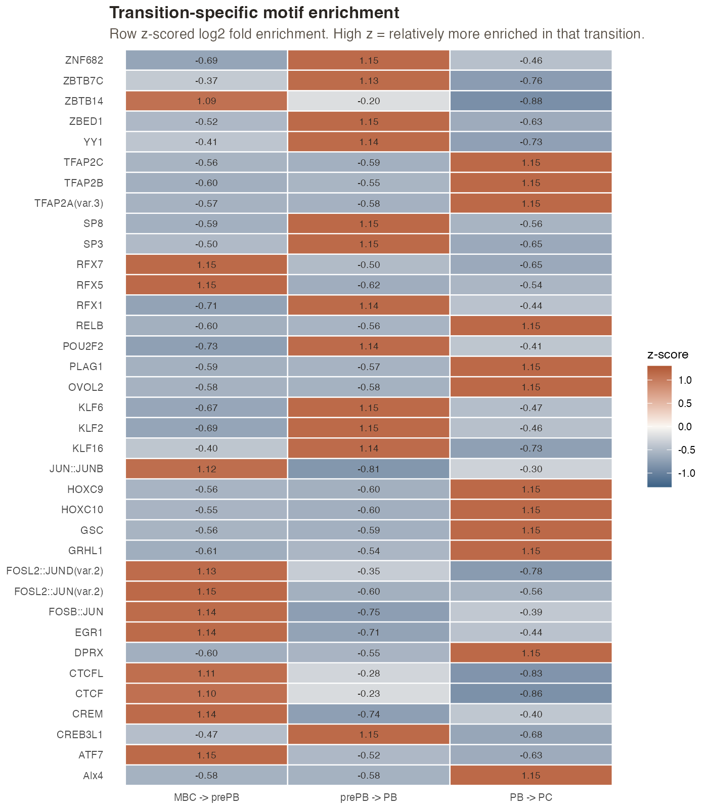
Figure 17. Transition-specific motif enrichment, row
z-scored so that each factor's relative preference across the three
transitions is visible. Three regulatory axes emerge: an AP-1 family axis
(JUN, FOS, FOSL2, FOSB heterodimers, ATF7, EGR1, CREM) at the MBC-to-prePB
transition; a POU2F2 / KLF / XBP1 axis at the prePB-to-PB transition; and an
IRF / STAT axis (IRF3, STAT2, plus RELB and the TFAP2 family) at the terminal
PB-to-PC transition.
Each axis carries textbook biological meaning. The AP-1 family
(FOS/JUN heterodimers) is the canonical B-cell activation complex, and its
enrichment at the very first transition matches the burst of chromatin opening
seen in Figure 16. The POU2F2 motif (Oct-2) is one of the most
classical plasma cell transcription factors, essential for immunoglobulin
expression, and it appears precisely at the specification step where cells
commit to the plasmablast fate. The IRF and STAT motifs at terminal
differentiation connect directly to the type-I interferon signature identified
in the RNA analysis.
Where chromatin and RNA tell the same story
The reward for building both layers is that they can validate each other. Two
regulatory programs are now supported by independent evidence from two
molecular modalities. The AP-1 axis is enriched in the chromatin opening at the
first transition (this analysis) and the AP-1 factor BATF3 sits as a
hub gene in the yellow class-switching co-expression module (Phase 2.2), the
same module that contains MIR155HG. The IRF / STAT axis is enriched in the
chromatin opening at terminal differentiation and the interferon-response
genes it regulates (IFI6, MX1, ISG15, XAF1, IFIT1, IFIT3) are the hub genes of
the blue IgG-plasma-cell module.
The network below assembles this integration into a single view. Each
developmental transition is its own constellation: transcription factors
(squares, identified from chromatin motif enrichment) on the outer ring, hub
genes (circles, identified from RNA co-expression modules) on the inner ring,
colored by their module identity. Reading left to right traces the
differentiation trajectory.
Figure 18. Multi-omics regulatory network of plasma cell
differentiation, integrating chromatin and RNA evidence. Squares are
transcription factors with motifs enriched in transition-opening peaks
(chromatin layer); circles are hub genes from hdWGCNA co-expression modules
(RNA layer); colors denote module identity. Three regulatory programs are
shown side by side: the AP-1 axis driving activation entry (left, yellow), the
POU2F2 / KLF / XBP1 axis driving plasmablast specification (centre, brown and
turquoise), and the IRF / STAT axis driving terminal differentiation (right,
blue). Hover any node for detail; use the dropdown to focus on a single
transition. Interactive figure, best viewed on a wider screen.
The AP-1 family and the IRF / STAT family are each evidenced twice over: once in
the chromatin that opens at their transition, and once in the RNA co-expression
module they regulate. Two independent molecular layers converge on the same
regulatory programs.
What the chromatin layer adds, and what comes next
The chromatin analysis adds a directional, mechanistic dimension to the RNA
findings. Where the RNA modules identified which genes move together,
the motif enrichment identifies which transcription factors plausibly drive
them, and the differential accessibility shows when in the
trajectory the regulatory landscape is established. The integration converts a
set of co-expression correlations into testable hypotheses about regulation:
that AP-1 factors open the activation program, that POU2F2 and XBP1 specify the
secretory plasmablast, and that IRF / STAT activity accompanies terminal
differentiation.
The work is bounded by its data. The ATAC dataset provides one sample per
stage, so biological replication at the chromatin level is not available, and
the fragment-level corruption described above precludes per-cell motif activity
scoring (which would otherwise sharpen the per-cell regulatory inference). The
natural next step, planned for the following phase, is TF-target inference with
SCENIC on the RNA data, which would formally distinguish regulators from their
targets within each module and allow the construction of a directed regulatory
network spanning transcription factors, protein-coding targets, and the lncRNA
layer together.
The code
Fully reproducible
The complete analysis lives in a public GitHub repository. Every figure on
this page can be regenerated from the public data by running the scripts in
order. Each script is self-contained, parameterized, and documented with
methods notes explaining the choices made.